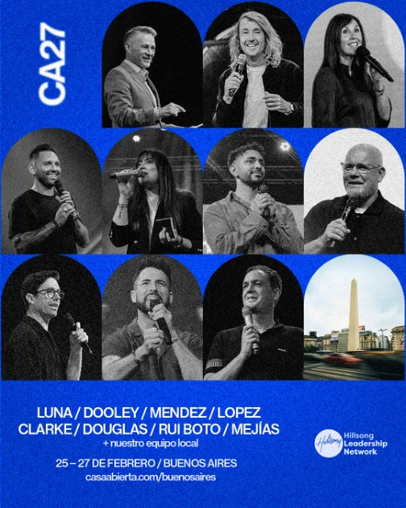
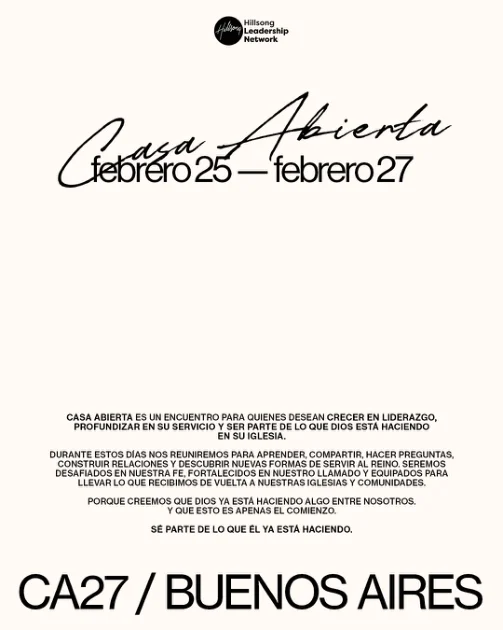

Día 01
25
Jueves
Programa a confirmar




El encuentro
Casa Abierta es un encuentro para quienes desean crecer en liderazgo, profundizar en su servicio y ser parte de lo que Dios está haciendo en su iglesia.
Durante estos días nos reuniremos para aprender, compartir, hacer preguntas, construir relaciones y descubrir nuevas formas de servir al Reino. Seremos desafiados en nuestra fe, fortalecidos en nuestro llamado y equipados para llevar lo que recibimos de vuelta a nuestras iglesias y comunidades.
Porque creemos que Dios ya está haciendo algo entre nosotros. Y que esto es apenas el comienzo.
Ver los díasTres días
El programa por día se anuncia más adelante.
Día 01
25
Jueves
Programa a confirmar
Día 02
26
Viernes
Programa a confirmar
Día 03
27
Sábado
Programa a confirmar
Qué vas a vivir
Tomado del manifiesto de Casa Abierta.
Sé parte de lo que Él ya está haciendo.
Dios ya está haciendo algo entre nosotros.
Esto es apenas el comienzo.
Oradores
Ocho oradores y nuestro equipo local.


Luna / Dooley / Mendez / Lopez / Clarke / Douglas / Rui Boto / Mejías
+ nuestro equipo local
Participación especial
+ Grabación en vivo de nuevo álbum de Hillsong en Español
El lugar
Buenos Aires, Argentina.
Del jueves 25 al sábado 27 de febrero de 2027.
Respuesta pendiente de confirmar.
Respuesta pendiente de confirmar.
Respuesta pendiente de confirmar.